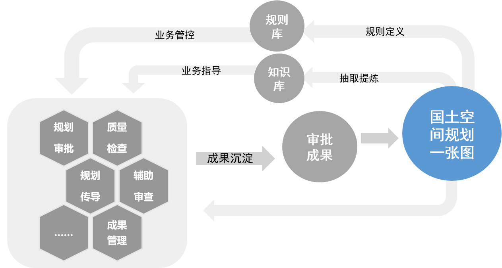

欢迎使用城市建设责任规划师助手系统
本系统旨在利用先进的大语言模型(LLM)技术,为责任规划师提供全流程、一站式的智能辅助服务,提升规划编制、审查、管理等环节的效率和质量。
责任规划师介绍
责任规划师是独立于政府部门和市场主体的第三方人员,为规划、建设、管理提供专业指导和技术服务。

规划审查
利用知识图谱和规则引擎技术,实现规划文本的自动化、智能化审查,提供规范化的审查报告。
文书生成
应用自然语言生成技术,根据规划项目信息自动生成规范化的规划文本,提供各类文书模板。

专家咨询
提供在线专家咨询服务,整合规划领域专家资源,为规划师提供权威的技术指导。
数据服务
提供规划基础数据的一站式查询、下载服务,建立集成案例、政策、规范、文献、投资的综合数据库。
更多功能
智能助手还提供个性化定制、在线培训、项目管理等更多增值服务,全面赋能规划师的工作实践。